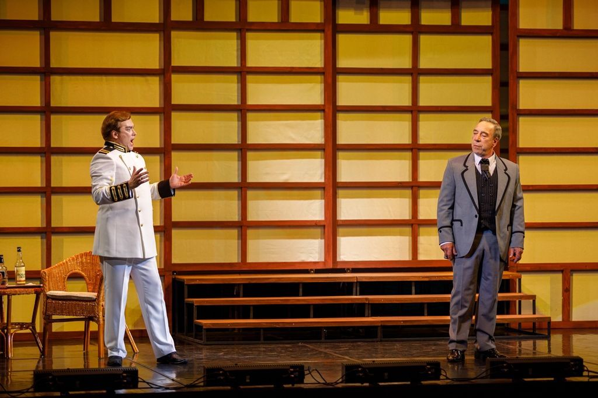
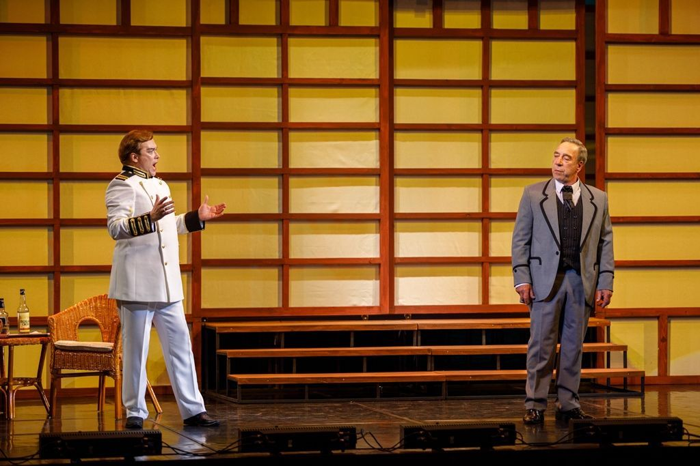

Путь в искусстве певца, баритона Владислава Калашникова — это пример стремительного творческого взлёта человека, сначала посвятившего себя другой профессии, а теперь уже ярко и плодотворно служащего оперному искусству, создавая один вдохновенный образ за другим.
Родился: Владислав Михайлович Калашников — 13 января 1951, село Новокиевский Увал, Амурская область.
Будучи в зрелом возрасте, имея за плечами более чем 10-летний опыт инженерной профессии, в 1979 году поступает в Благовещенское музыкальное училище и экстерном заканчивает его в 1982 году по классу заслуженного артиста РСФСР Валерия Александровича Побережского.
00:00 / 00:00
-
Снова туда, где море огней2002 — популярные арии
-
Non ti scordar di me2005 — арии и романсы

 


Ария из Риголетто
Сцена из Травиаты